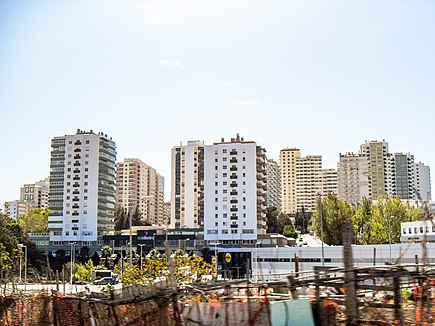

A minha cidade
Alfragide
Alfragide é uma localidade portuguesa sede da Freguesia de Alfragide do Município da Amadora, freguesia com 2,51 km² de área e 16 837 habitantes (censo de 2021), tendo, por isso, uma densidade populacional de 6 708 hab./km².
A minha cidade é muito linda!!